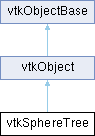

|
Etrek
|
|
Etrek
|
class to build and traverse sphere trees More...
#include <vtkSphereTree.h>

Public Member Functions | |
| vtkGetMacro (NumberOfLevels, int) | |
| vtkTypeMacro (vtkSphereTree, vtkObject) | |
| void | PrintSelf (ostream &os, vtkIndent indent) override |
| virtual void | SetDataSet (vtkDataSet *) |
| vtkGetObjectMacro (DataSet, vtkDataSet) | |
| void | Build () |
| void | Build (vtkDataSet *input) |
| vtkSetMacro (BuildHierarchy, bool) | |
| vtkGetMacro (BuildHierarchy, bool) | |
| vtkBooleanMacro (BuildHierarchy, bool) | |
| const unsigned char * | SelectPoint (double point[3], vtkIdType &numSelected) |
| const unsigned char * | SelectLine (double origin[3], double ray[3], vtkIdType &numSelected) |
| const unsigned char * | SelectPlane (double origin[3], double normal[3], vtkIdType &numSelected) |
| void | SelectPoint (double point[3], vtkIdList *cellIds) |
| void | SelectLine (double origin[3], double ray[3], vtkIdList *cellIds) |
| void | SelectPlane (double origin[3], double normal[3], vtkIdList *cellIds) |
| vtkSetClampMacro (Resolution, int, 2, VTK_MAX_SPHERE_TREE_RESOLUTION) | |
| vtkGetMacro (Resolution, int) | |
| vtkSetClampMacro (MaxLevel, int, 1, VTK_MAX_SPHERE_TREE_LEVELS) | |
| vtkGetMacro (MaxLevel, int) | |
| const double * | GetCellSpheres () |
| const double * | GetTreeSpheres (int level, vtkIdType &numSpheres) |
| bool | UsesGarbageCollector () const override |
| Public Member Functions inherited from vtkObject | |
| vtkBaseTypeMacro (vtkObject, vtkObjectBase) | |
| virtual void | DebugOn () |
| virtual void | DebugOff () |
| bool | GetDebug () |
| void | SetDebug (bool debugFlag) |
| virtual void | Modified () |
| virtual vtkMTimeType | GetMTime () |
| void | RemoveObserver (unsigned long tag) |
| void | RemoveObservers (unsigned long event) |
| void | RemoveObservers (const char *event) |
| void | RemoveAllObservers () |
| vtkTypeBool | HasObserver (unsigned long event) |
| vtkTypeBool | HasObserver (const char *event) |
| vtkTypeBool | InvokeEvent (unsigned long event) |
| vtkTypeBool | InvokeEvent (const char *event) |
| std::string | GetObjectDescription () const override |
| unsigned long | AddObserver (unsigned long event, vtkCommand *, float priority=0.0f) |
| unsigned long | AddObserver (const char *event, vtkCommand *, float priority=0.0f) |
| vtkCommand * | GetCommand (unsigned long tag) |
| void | RemoveObserver (vtkCommand *) |
| void | RemoveObservers (unsigned long event, vtkCommand *) |
| void | RemoveObservers (const char *event, vtkCommand *) |
| vtkTypeBool | HasObserver (unsigned long event, vtkCommand *) |
| vtkTypeBool | HasObserver (const char *event, vtkCommand *) |
| template<class U, class T> | |
| unsigned long | AddObserver (unsigned long event, U observer, void(T::*callback)(), float priority=0.0f) |
| template<class U, class T> | |
| unsigned long | AddObserver (unsigned long event, U observer, void(T::*callback)(vtkObject *, unsigned long, void *), float priority=0.0f) |
| template<class U, class T> | |
| unsigned long | AddObserver (unsigned long event, U observer, bool(T::*callback)(vtkObject *, unsigned long, void *), float priority=0.0f) |
| vtkTypeBool | InvokeEvent (unsigned long event, void *callData) |
| vtkTypeBool | InvokeEvent (const char *event, void *callData) |
| virtual void | SetObjectName (const std::string &objectName) |
| virtual std::string | GetObjectName () const |
| Public Member Functions inherited from vtkObjectBase | |
| const char * | GetClassName () const |
| virtual vtkTypeBool | IsA (const char *name) |
| virtual vtkIdType | GetNumberOfGenerationsFromBase (const char *name) |
| virtual void | Delete () |
| virtual void | FastDelete () |
| void | InitializeObjectBase () |
| void | Print (ostream &os) |
| void | Register (vtkObjectBase *o) |
| virtual void | UnRegister (vtkObjectBase *o) |
| int | GetReferenceCount () |
| void | SetReferenceCount (int) |
| bool | GetIsInMemkind () const |
| virtual void | PrintHeader (ostream &os, vtkIndent indent) |
| virtual void | PrintTrailer (ostream &os, vtkIndent indent) |
Static Public Member Functions | |
| static vtkSphereTree * | New () |
| Static Public Member Functions inherited from vtkObject | |
| static vtkObject * | New () |
| static void | BreakOnError () |
| static void | SetGlobalWarningDisplay (vtkTypeBool val) |
| static void | GlobalWarningDisplayOn () |
| static void | GlobalWarningDisplayOff () |
| static vtkTypeBool | GetGlobalWarningDisplay () |
| Static Public Member Functions inherited from vtkObjectBase | |
| static vtkTypeBool | IsTypeOf (const char *name) |
| static vtkIdType | GetNumberOfGenerationsFromBaseType (const char *name) |
| static vtkObjectBase * | New () |
| static void | SetMemkindDirectory (const char *directoryname) |
| static bool | GetUsingMemkind () |
Protected Member Functions | |
| void | BuildTreeSpheres (vtkDataSet *input) |
| void | ExtractCellIds (const unsigned char *selected, vtkIdList *cellIds, vtkIdType numSelected) |
| void | BuildTreeHierarchy (vtkDataSet *input) |
| void | BuildStructuredHierarchy (vtkStructuredGrid *input, double *tree) |
| void | BuildUnstructuredHierarchy (vtkDataSet *input, double *tree) |
| void | ReportReferences (vtkGarbageCollector *) override |
| Protected Member Functions inherited from vtkObject | |
| void | RegisterInternal (vtkObjectBase *, vtkTypeBool check) override |
| void | UnRegisterInternal (vtkObjectBase *, vtkTypeBool check) override |
| void | InternalGrabFocus (vtkCommand *mouseEvents, vtkCommand *keypressEvents=nullptr) |
| void | InternalReleaseFocus () |
| Protected Member Functions inherited from vtkObjectBase | |
| vtkObjectBase (const vtkObjectBase &) | |
| void | operator= (const vtkObjectBase &) |
Protected Attributes | |
| vtkDataSet * | DataSet |
| unsigned char * | Selected |
| int | Resolution |
| int | MaxLevel |
| int | NumberOfLevels |
| bool | BuildHierarchy |
| vtkDoubleArray * | Tree |
| double * | TreePtr |
| vtkSphereTreeHierarchy * | Hierarchy |
| double | AverageRadius |
| double | SphereBounds [6] |
| vtkTimeStamp | BuildTime |
| int | SphereTreeType |
| Protected Attributes inherited from vtkObject | |
| bool | Debug |
| vtkTimeStamp | MTime |
| vtkSubjectHelper * | SubjectHelper |
| std::string | ObjectName |
| Protected Attributes inherited from vtkObjectBase | |
| std::atomic< int32_t > | ReferenceCount |
| vtkWeakPointerBase ** | WeakPointers |
Additional Inherited Members | |
| Static Protected Member Functions inherited from vtkObjectBase | |
| static vtkMallocingFunction | GetCurrentMallocFunction () |
| static vtkReallocingFunction | GetCurrentReallocFunction () |
| static vtkFreeingFunction | GetCurrentFreeFunction () |
| static vtkFreeingFunction | GetAlternateFreeFunction () |
class to build and traverse sphere trees
vtkSphereTree is a helper class used to build and traverse sphere trees. Various types of trees can be constructed for different VTK dataset types, as well well as different approaches to organize the tree into hierarchies.
Typically building a complete sphere tree consists of two parts: 1) creating spheres for each cell in the dataset, then 2) creating an organizing hierarchy. The structure of the hierarchy varies depending on the topological characteristics of the dataset.
Once the tree is constructed, various geometric operations are available for quickly selecting cells based on sphere tree operations; for example, process all cells intersecting a plane (i.e., use the sphere tree to identify candidate cells for plane intersection).
This class does not necessarily create optimal sphere trees because some of its requirements (fast build time, provide simple reference code, a single bounding sphere per cell, etc.) precludes optimal performance. It is also oriented to computing on cells versus the classic problem of collision detection for polygonal models. For more information you want to read Gareth Bradshaw's PhD thesis "Bounding Volume Hierarchies for Level-of-Detail Collision Handling" which does a nice job of laying out the challenges and important algorithms relative to sphere trees and BVH (bounding volume hierarchies).
| void vtkSphereTree::Build | ( | ) |
Build the sphere tree (if necessary) from the data set specified. The build time is recorded so the sphere tree will only build if something has changed. An alternative method is available to both set the dataset and then build the sphere tree.
| const double * vtkSphereTree::GetCellSpheres | ( | ) |
Special methods to retrieve the sphere tree data. This is generally used for debugging or with filters like vtkSphereTreeFilter. Both methods return an array of double* where four doubles represent a sphere (center + radius). In the first method a sphere per cell is returned. In the second method the user must also specify a level in the sphere tree (used to retrieve the hierarchy of the tree). Note that null pointers can be returned if the request is not consistent with the state of the sphere tree.
|
static |
Instantiate the sphere tree.
|
overridevirtual |
|
overrideprotectedvirtual |
Reimplemented from vtkObjectBase.
| void vtkSphereTree::SelectPoint | ( | double | point[3], |
| vtkIdList * | cellIds ) |
Methods for cell selection based on a geometric query. Internally different methods are used depending on the dataset type. The method populates an vtkIdList with cell ids that may satisfy the geometric query (the user must provide a vtkIdList which the methods fill in). SelectPoint lists all cells with a non-zero value that may contain a point. SelectLine lists all cells that may intersect an infinite line. SelectPlane lists all cells that may intersect with an infinite plane.
| const unsigned char * vtkSphereTree::SelectPoint | ( | double | point[3], |
| vtkIdType & | numSelected ) |
Methods for cell selection based on a geometric query. Internally different methods are used depending on the dataset type. The array returned is set to non-zero for each cell that intersects the geometric entity. SelectPoint marks all cells with a non-zero value that may contain a point. SelectLine marks all cells that may intersect an infinite line. SelectPlane marks all cells that may intersect with an infinite plane.
|
virtual |
Specify the dataset from which to build the sphere tree.
|
inlineoverridevirtual |
Participate in garbage collection via ReportReferences.
Reimplemented from vtkObjectBase.
| vtkSphereTree::vtkGetMacro | ( | NumberOfLevels | , |
| int | ) |
Get the current depth of the sphere tree. This value may change each time the sphere tree is built and the branching factor (i.e., resolution) changes. Note that after building the sphere tree there are [0,this->NumberOfLevels) defined levels.
| vtkSphereTree::vtkSetClampMacro | ( | MaxLevel | , |
| int | , | ||
| 1 | , | ||
| VTK_MAX_SPHERE_TREE_LEVELS | ) |
Specify the maximum number of levels for the tree. By default, the number of levels is set to ten. If the number of levels is set to one or less, then no hierarchy is built (i.e., just the spheres for each cell are created). Note that the actual level of the tree may be less than this value depending on the number of cells and Resolution factor.
| vtkSphereTree::vtkSetClampMacro | ( | Resolution | , |
| int | , | ||
| 2 | , | ||
| VTK_MAX_SPHERE_TREE_RESOLUTION | ) |
Sphere tree creation requires gathering spheres into groups. The Resolution variable is a rough guide to the size of each group (the size different meanings depending on the type of data (structured versus unstructured). For example, in 3D structured data, blocks of resolution Resolution^3 are created. By default the Resolution is three.
| vtkSphereTree::vtkSetMacro | ( | BuildHierarchy | , |
| bool | ) |
Control whether the tree hierarchy is built. If not, then just cell spheres are created (one for each cell).
| vtkSphereTree::vtkTypeMacro | ( | vtkSphereTree | , |
| vtkObject | ) |
Standard type related macros and PrintSelf() method.